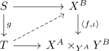
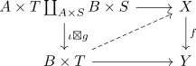
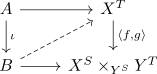

inner hom of a monomorphism and anodyne as trivial fibration
Proposition
Let $f: X \rightarrow Y$ an kan fibration $\iota: A \rightarrow B$ be a anodyne map. Then the map
\begin{align*}
\langle f,\iota\rangle: X^B \rightarrow X^A \times_{Y^A} Y^B
\end{align*}
is a trivial fibration
Proof
given a lifting problem

with $g$ being a monomorphism (cf. trivial fibration and right lifting property against monomorphisms) we may use the statement about bijection between lifting problems for an adjunction to get

and then again using commutativity of $\times$ and $\coprod_{-}$

Here by $\iota$ being a mono (cf. inodyne map as monomorphism) and inner hom of a monomorphism and kan fibration we may find a solution to the third problem, which translates to a solution to the second and then to the first problem.